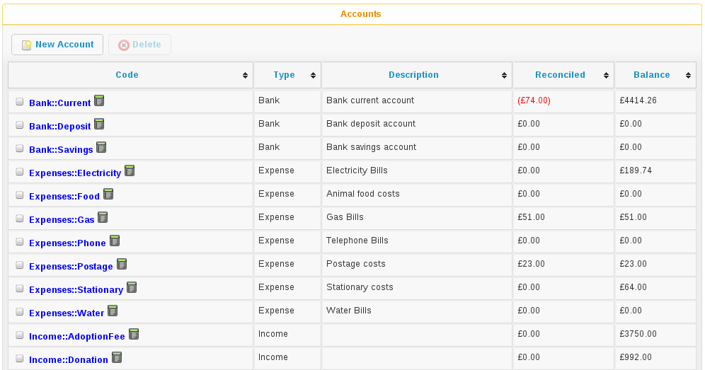

11 Accounts
Animal Shelter Manager includes a full, double-entry book keeping system to manage your shelter's accounts.
To access the accounts module, go to Financial->Accounts, hit the toolbar button or press SHIFT+ALT+X if your browser supports it.

ASM will show you a list of all accounts on the system, with current balances. ASM comes preloaded with a basic set of accounts you can use to get started. The use of Type::Name when creating codes for accounts is just a convention, and you are free to use anything you like. It is quite a useful convention though, as it enables you to see at a glance the account type and ASM will group accounts of the same type together when showing you lists and dropdown boxes.
If you've never used a double entry book-keeping system before, the basic idea is that you have a collection of transactions. Each transaction contains a source account and a destination account - this means that you are always moving money from one account to another.
Accounts can be real, such as bank accounts, credit cards, loans, etc. or purely for accounting purposes (“nominal” accounts to use the correct terminology). You create income and expense accounts to categorise how money enters and leaves your shelter.
For example, to pay an electricity bill, you would create a transaction that takes the money from your real current account, and moves it to your electricity expense account.
Because every transaction has two sides, this system enables you to easily see what is being spent on electricity (for example), or how much money has been made via various income sources.

When adding transactions, ASM already knows which account you were looking at, so it prompts you for the other side of the transaction. You can also specify whether it is a deposit or a withdrawal to determine which way the money is going.
11.1 Reconciliation
Reconciliation is the process of checking a real bank account statement against your computerised accounts. It is simply a flag that you have verified the transaction. You can blanket mark all transactions reconciled up until today's date from the account screen as a handy shortcut.
From both the accounts and transaction list screens, you can tick the checkboxes in the leftmost column to select multiple transactions/accounts.
11.2 Payments
ASM already knows about your payments and by default will save you time when entering accounts.
When you create a payment type category, ASM will automatically create a matching nominal income account for it.
When you add a new payment to the system, ASM will automatically create a matching transaction, taking the money from the payment type nominal account and moving it to the account of your choice (see Settings->Options->Accounts where this account can specified). The default destination account for payments is the first bank account listed if you do not change it.
11.3 Reporting
ASM does not include accounting reports by default. Instead, you can install them under Settings->Reports from sheltermanager.com.You will find the standard Balance Sheet and Profit and Loss reports for the accounting system.